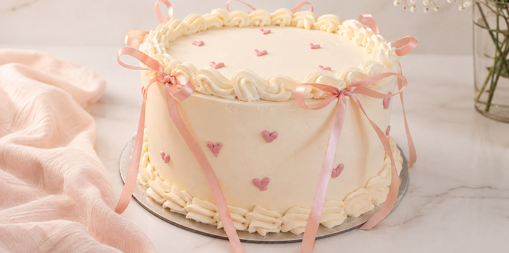

Massa chiffon de cacau com cobertura de brigadeiro tradicional.
BOLOS ARTESANAIS · ALMADA, PORTUGAL
Pequenos detalhes.
Doces memórias.
Um aniversário, uma conquista ou só porque sim.
Há um bolo para tornar o momento mais seu.
da Jade, com carinho.
FEITOS À MÃO EM ALMADA

Bolos artesanais
Decoração personalizada
De Almada, com carinho
O NOSSO CATÁLOGO
Qual é o seu doce momento?
Rosas em tons de rosa para uma mesa de festa.
Flores delicadas e detalhes em dourado.
CONHEÇA AS DELÍCIAS DA JADE
O carinho também
se serve à fatia.
Em Almada, os bolos da Jade ganham forma à mão. Dos sabores clássicos às decorações personalizadas, cada escolha dá um toque diferente à celebração.
Explore o catálogo, escolha uma inspiração e imagine o próximo momento à volta da mesa.
Mais perto de siDA IDEIA À CELEBRAÇÃO
O seu bolo começa
com uma ideia.
Explore o percurso de personalização.
Neste protótipo, tudo fica no seu ecrã.
-
01
Encontre a inspiração
Um clássico, um tema ou um detalhe que seja seu.
-
02
Dê-lhe o seu toque
Experimente sabores e decorações na demonstração.
-
03
Imagine a celebração
Reveja a ideia. Disponibilidade e orçamento ficam por confirmar com a Jade.